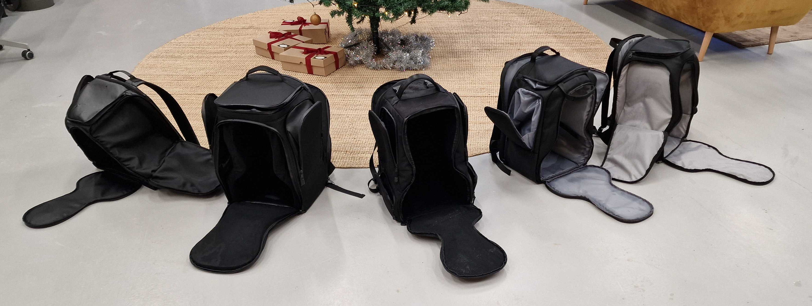
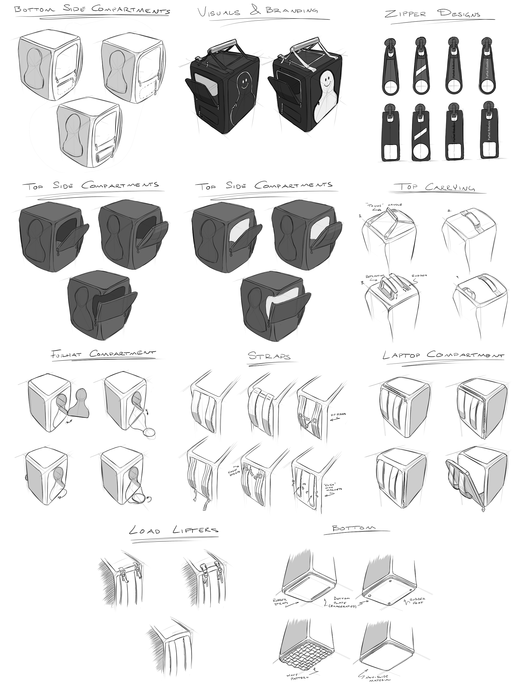

First steps
I joined after the first prototypes and design decisions had been made. We isolated each component, defined what worked and what did not, then sketched alternatives for the parts that needed clearer design direction.

